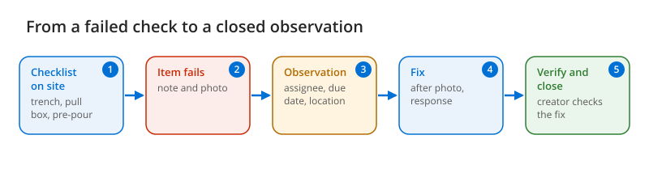

Inspections and observations
In one sentence: an inspection is a checklist you fill on site; an observation is an issue assigned to someone to fix; a failed checklist item should become an observation.

Inspections
- Built from templates: company-level ones you reuse on every project, project-level ones for special cases.
- Each item is answered (for example pass, fail, not applicable), with notes and photos.
- Best done on the phone, on site, as the work is checked.
Observations
- An issue with a description, location, photos, a type (quality, safety, and so on), an assignee and a due date.
- Created from an inspection's failed item (it keeps a link to the inspection), from a photo, from a drawing location, or on its own.
- The assignee responds, the creator verifies and closes.
Checklists worth building for electrical work
| Checklist | Examples of items |
|---|---|
| Trench before backfill | Depth and cover, conduit type and size, bends, separation, warning tape, tracer wire, bedding |
| Pull box set | Type and size, grade, location vs plans, grounding, conduit entries, lid marking |
| Foundation before pour | Anchor bolts and template, conduits, rebar, dimensions, approved mix |
| Pre-energization | Megger and continuity results, labeling, grounding, torque, panel schedule |
| Daily safety walk | Traffic control, trench protection, PPE, housekeeping |
Use the specification's acceptance criteria and your quality plan for the item wording. See Electrical testing and Grounding and bonding.
PM notes
Checklists are proof that work was checked before it was covered. Keep them short enough to be filled every time.
In Procore's own help
Create an observation from an inspection · Create an observation. Procore's help pages are the reference for how each screen works today.
Common mistakes
- Checklists too long to finish on site.
- Failed items noted but never assigned.
- Observations closed without a photo of the fix.